Blood–brain barrier penetration: fingerprint baselines, molecular graphs and scaffold-aware evaluation
Question. Does a bond-aware graph neural network predict blood–brain barrier penetration better than a 2015-vintage molecular fingerprint with a linear model — and how much of the answer survives being tested on chemistry the model has never seen?
Answer. On a random split the GNN leads by 0.016 ROC-AUC. On a scaffold split it leads by 0.031, which is exactly one seed standard deviation, so no advantage is demonstrated on the split that represents the question of interest. Changing the split costs 0.138–0.153 ROC-AUC: four to five times what changing the model gains. Meanwhile accuracy and F1 rise on the harder split while specificity falls from 0.768 to 0.217. Error rate tracks Tanimoto distance to the training set (72.4% correct in the least-similar third vs 90.8% in the most-similar third, Mann–Whitney p = 0.0008).
Input one molecule as a SMILES string, converted to a graph (atoms = nodes, bonds =
edges). Output one probability in [0,1] for the whole molecule. Unit of analysis
the molecule — not an atom, not a patient, not a dose. Task graph-level binary
classification. Intended technical use ranking and triage within a method-comparison
experiment. p_np = 1 means the compound is annotated in the source literature as
penetrating the barrier, p_np = 0 as non-penetrating. These are curated
annotations compiled from heterogeneous sources — different assays, species and definitions
of "penetrating" — not measurements under one protocol.
One SMILES string is not one molecule: the same compound can be written many ways, so de-duplicating on the raw string finds only some repeats. Every SMILES is canonicalized with RDKit first and duplicates are detected on the canonical form. Where records share a canonical SMILES and agree, one is kept; where they disagree, the whole group is deleted. That rule costs molecules but is the only defensible option — keeping either label guarantees a known-wrong example, and in the test set a correct prediction would then score as an error.
| stage | n |
|---|---|
| rows in the MoleculeNet CSV | 2050 |
| graphs built by the PyG loader | 2039 |
| unparseable SMILES / empty graphs / bad labels | 0 / 0 / 0 |
| duplicate records collapsed (same canonical SMILES, labels agree) | −54 |
| conflicting-label records removed (10 groups) | −20 |
| clean set | 1965 |
| negative / positive | 465 / 1500 |
| positive proportion | 0.7634 |
Atoms per molecule: min 2, median 23, mean 24.2, max 132. Bonds: min 1,
median 25, mean 26.1, max 145. Example graph (index 0, BrC(Br)Br, y = 1.0):
x (4, 9), edge_index (2, 6), edge_attr (6, 3).
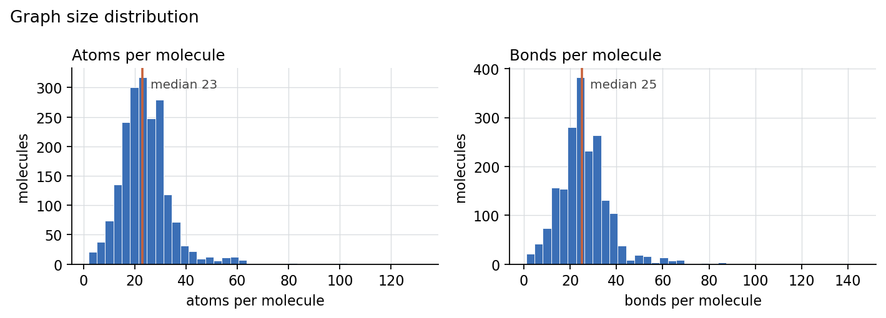
Fig. 1 Graph size distributions. Both are right-skewed with a long tail of large molecules; the median molecule has 23 atoms.
The dataset contains aspirin twice, with opposite labels. Record 102
(acetylsalicylate, CC(=O)Oc1ccccc1C(O)=O, p_np = 0) and record 1009
(aspirin, C1=CC=CC(=C1C(O)=O)OC(C)=O, p_np = 1) are the same molecule in
two spellings. Raw-string de-duplication cannot see this; canonicalization finds it along with
nine other conflicting groups — among them atropine, levodopa, loperamide and loratadine.
Their name fields expose the mechanism: BRL53080/loperamide,
Trimetrexate/trimetrexate, indomethacin/indomethacin(indometacin).
The benchmark was merged from sources that disagreed on the name and on the answer
(§ G.3, limitation 1).
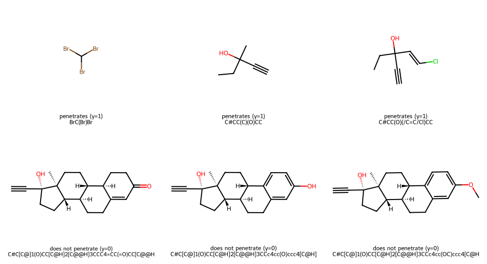
Fig. 2 Six molecules, three from each class, with canonical SMILES and label. Top row penetrating (y = 1), bottom row non-penetrating (y = 0).
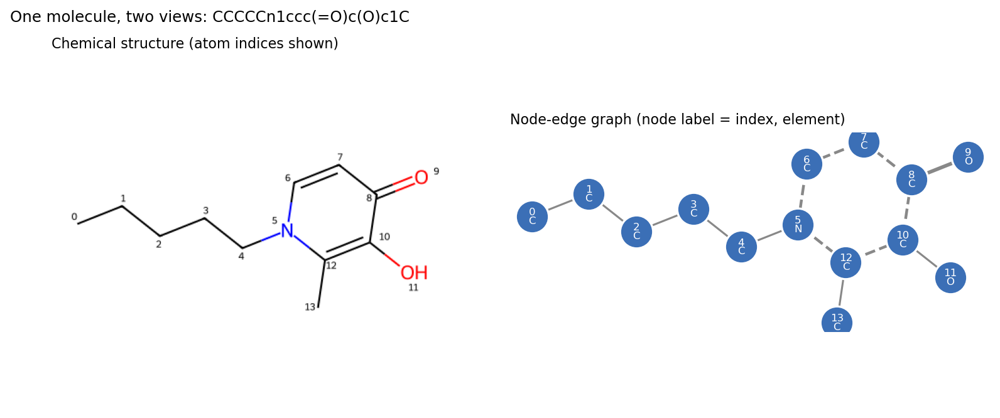
Fig. 3 One molecule as chemistry and as a node–edge graph, atom indices
shared. Each heavy atom is one node; each bond is one edge, stored twice in
edge_index (once per direction) so messages travel both ways. Hydrogens are
implicit and are not nodes; aromaticity is a bond category, not geometry.
The PyG from_smiles featurizer produces nine atom columns and three bond
columns. Every one is a category code. Column 0 is the atomic number, so carbon is 6
and lithium is 3 — but carbon is not "twice" lithium. Passing those integers to a linear layer
asserts an ordering and a spacing that do not exist in chemistry.
| x column | vocab | edge_attr column | vocab |
|---|---|---|---|
| 0 atomic_num | 119 | 0 bond_type | 22 |
| 1 chirality | 4 | 1 stereo | 6 |
| 2 degree | 11 | 2 is_conjugated | 2 |
| 3 formal_charge | 12 | ||
| 4 num_hs | 9 | Encoding: trainable embeddings | |
| 5 num_radical_electrons | 5 | one nn.Embedding per column, summed (the OGB
convention) | |
| 6 hybridization | 8 | ||
| 7 is_aromatic | 2 | ||
| 8 is_in_ring | 2 | ||
Embeddings are preferred to one-hot here because the atomic-number vocabulary alone is 119 wide and most of it never occurs in this dataset; a table learns a representation only for the elements present, and the summed encoding keeps the input dimension at the hidden width instead of 192.
PyG batches graphs by stacking them into one disconnected graph. For 32 molecules:
x (708, 9) — every atom stacked; edge_index (2, 1498) — indices into
that stack; edge_attr (1498, 3); batch (708) — which molecule each
atom came from, which is what lets pooling emit one vector per molecule rather than one per
batch; y (32, 1).
| check | result |
|---|---|
| all labels finite | ok |
| every graph has ≥ 1 atom | ok |
| labels are binary {0, 1} | ok |
| edge_index within node range, edges bidirectional | ok |
| batch labels = number of graphs (32 = 32) | ok |
| max(batch) + 1 = graphs in batch, nothing lost | ok |
| GNN output invariant to atom relabelling | ok |
The last check matters because a model that is not permutation-invariant would still train and still score — it would simply be learning the arbitrary order in which RDKit happened to emit atoms.
Drug datasets are not samples of chemical space; they are collections of families. The same parent compound recurs as a salt, an ester, a homologue, a methylated analogue. A random split cuts through those families, so a test molecule routinely has a near-twin in training, and a model can score well by recognising the family rather than learning anything that transfers. The resulting number estimates interpolation within known series — not generalization. A Bemis–Murcko scaffold split forces every molecule sharing a ring framework into one subset, so test scaffolds are genuinely unseen: the question a drug programme actually asks. Acyclic molecules (95 of them) have an empty Murcko scaffold and are kept as one group, not one each — the conservative choice, since it guarantees no acyclic molecule in test has an acyclic twin in train. Both splits are 70:15:15 from seed 0, and both were verified for complete coverage, pairwise-disjoint indices, and no canonical SMILES shared across subsets; for the scaffold split, scaffold sets were verified disjoint.
| split | subset | n | positive | frac | scaffolds |
|---|---|---|---|---|---|
| random | train | 1376 | 1050 | 0.763 | 766 |
| val | 295 | 225 | 0.763 | 216 | |
| test | 294 | 225 | 0.765 | 212 | |
| scaffold | train | 1376 | 1036 | 0.753 | 431 |
| val | 295 | 216 | 0.732 | 295 | |
| test | 294 | 248 | 0.844 | 294 |
The random split preserves the class balance by construction (0.763/0.763/0.765). The scaffold split cannot: grouping by framework means the balance follows whichever frameworks land where, and the scaffold test set comes out 84.4% positive against 75.3% in training. That drift is not a defect to be corrected — it is part of what makes the split realistic — but it must be read alongside the accuracy column in § F, because a higher base rate raises accuracy for a majority-predicting model for free.
Scaffold counts in the random split sum to 1194 against 1020 unique — the leakage made visible, the same framework on both sides of the line. In the scaffold split they sum to exactly 1020.
A silent failure this pipeline refuses to have. RDKit 2026.09.2 raises
RuntimeError: bad any cast from Chem.MurckoDecompose. An early
version of the scaffold function caught that exception and returned "". All 1965
molecules were then assigned to the single "acyclic" group, the training set came out
empty, and every disjointness check still passed — because
disjoint-and-empty is disjoint. The reported split was structurally valid and scientifically
meaningless.
Three changes make that class of failure loud: the function raises rather than
catching; an empty scaffold is cross-checked against RDKit's ring count and raises if the
molecule has rings; and scaffold_split rejects any decomposition yielding fewer
than 10 groups or a group holding more than half the data. The environment pins
rdkit==2025.03.6. Expected sanity values, asserted in the notebook before use:
aspirin → c1ccccc1, butanol → "", 1020 scaffolds, 95 acyclic.
Both test sets were then left untouched until § F. No test index was used for model selection, hyperparameter choice, or threshold choice at any point.
A baseline exists to make the GNN's number mean something. This one is deliberately old and simple. Morgan fingerprints, radius 2 (ECFP4), 2048 bits: every circular atom neighbourhood up to two bonds out is hashed to a bit position, so the vector is a presence/absence description of local chemistry — substructures, with no notion of global shape, conformation or the relative position of distant groups. Features are the raw bit vectors; the classifier is L2-regularised logistic regression (liblinear).
Protocol. Fitted on training molecules only. class_weight="balanced",
estimated from the training subset only — the class ratio is a property of the data and
reading it off validation or test is leakage. C was chosen by validation ROC-AUC
over {0.01, 0.03, 0.1, 0.3, 1, 3, 10}: the random-split curve peaked at C = 0.1 (0.9334) and
the scaffold-split curve at C = 0.1 (0.8906), both declining monotonically thereafter, which
is the expected direction — 2048 sparse bits on 1376 molecules needs strong regularisation.
One decision threshold was then selected on validation by F1 and frozen. Each test set was
scored exactly once. Full settings: radius 2, 2048 bits, no chirality, balanced class weight,
C = 0.1, liblinear, seed 0, threshold objective F1.
GINEConv, the edge-aware Graph Isomorphism Network layer:
hv′ = MLP( (1+ε)·hv + Σu∈N(v) ReLU(hu + euv) )
The bond embedding euv enters inside the sum, so bond information shapes
every message rather than being concatenated at the end. That is the reason to prefer it to
GCN or plain GIN here: whether a ring bond is aromatic, or a carbonyl conjugated, changes what
a neighbour ought to contribute. Three message-passing layers (the requirement is ≥ 2), each
with BatchNorm, ReLU, dropout 0.3 and a residual connection; a separate bond encoder per
layer, because what matters about a bond differs between the first hop and the third;
mean pooling over atoms; a two-layer head returning one logit.
GINENet(hidden=128, layers=3, pooling=mean, dropout=0.3) — 250,244
parameters for 1376 training molecules, a ratio worth keeping in mind when reading § F.
| choice | value and reason |
|---|---|
| loss | BCEWithLogits, pos_weight =
nneg/npos from train only; on BBBP it is < 1, down-weighting
the majority class |
| optimiser | Adam, lr 1e−3, weight decay 1e−5; the model is too small for the optimiser choice to be interesting, and dropout already regularises |
| batch size | 64; a singleton final batch is dropped, since BatchNorm cannot normalise one sample |
| budget | 200 epochs, early stop at patience 30; the budget is generous and early stopping sets the real one |
| selection | best validation ROC-AUC, weights restored — not validation loss, which is dominated by the majority class and keeps improving after ranking quality has peaked |
| seeds | 0, 1, 2 per split, so seed noise can be separated from the split effect |
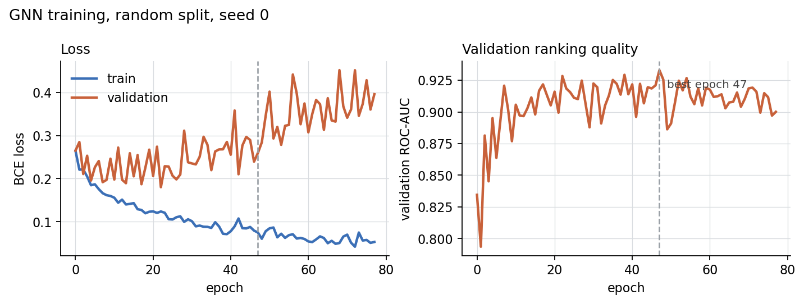
Fig. 4 Random split, seed 0. Validation loss separates from training loss while validation ROC-AUC is still rising — classic overfitting, and the reason selection is on ROC-AUC rather than loss. Best epoch 47 of 77.
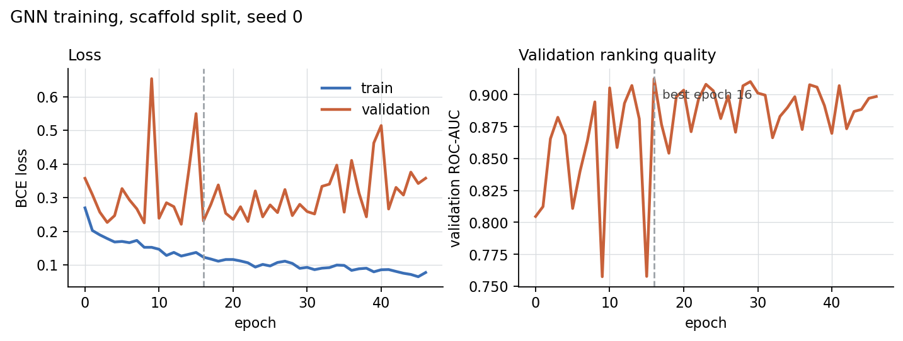
Fig. 5 Scaffold split, seed 0. The same overfitting plus visible instability in validation ROC-AUC (step sd 0.049): with unseen frameworks in validation, small weight changes move the ranking a lot. Best epoch 16 of 46.
Diagnosis, from the validation curves only. All six runs overfit: validation loss ends well above training loss, and the best validation ROC-AUC arrives 30 epochs before the stop in every case. Two of the three scaffold runs are additionally unstable (step sd 0.049 and 0.030 versus none flagged on random). Early stopping therefore does real work here rather than being a formality. Seed noise vs split effect: the mean within-split standard deviation of ROC-AUC is 0.0210, while the random − scaffold gap is 0.1385 — a ratio of 6.6×. Changing the split does something categorically larger than changing the seed.
Every number below uses a threshold selected on the corresponding validation subset; each test set was scored once per model per split. GNN rows are mean ± sd over seeds 0, 1, 2.
| model | split | thr | ROC-AUC | PR-AUC | accuracy | bal. acc | sens | spec | F1 |
|---|---|---|---|---|---|---|---|---|---|
| ECFP + LR | random | 0.528 | 0.913 | 0.969 | 0.854 | 0.824 | 0.880 | 0.768 | 0.902 |
| GNN (GINE) | random | 0.129 | 0.929 ± 0.011 | 0.978 ± 0.003 | 0.876 ± 0.023 | 0.792 ± 0.031 | 0.951 ± 0.016 | 0.633 ± 0.047 | 0.922 ± 0.015 |
| ECFP + LR | scaffold | 0.225 | 0.760 | 0.946 | 0.874 | 0.607 | 0.996 | 0.217 | 0.930 |
| GNN (GINE) | scaffold | 0.265 | 0.791 ± 0.031 | 0.957 ± 0.007 | 0.833 ± 0.012 | 0.597 ± 0.040 | 0.941 ± 0.024 | 0.254 ± 0.098 | 0.905 ± 0.008 |
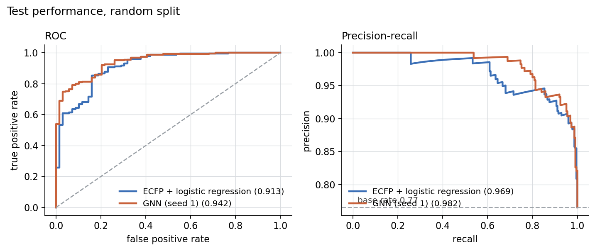
Fig. 6 ROC and precision–recall, random split test set.
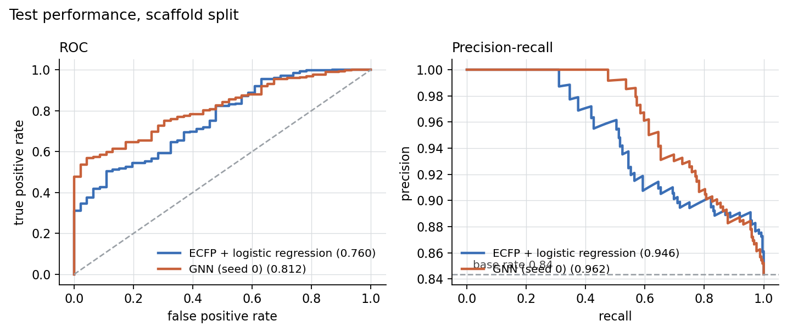
Fig. 7 Scaffold split. PR-AUC stays high (0.946–0.957) only because the base rate is 0.844 — the dashed line. Read it against that line, not against 0.5.
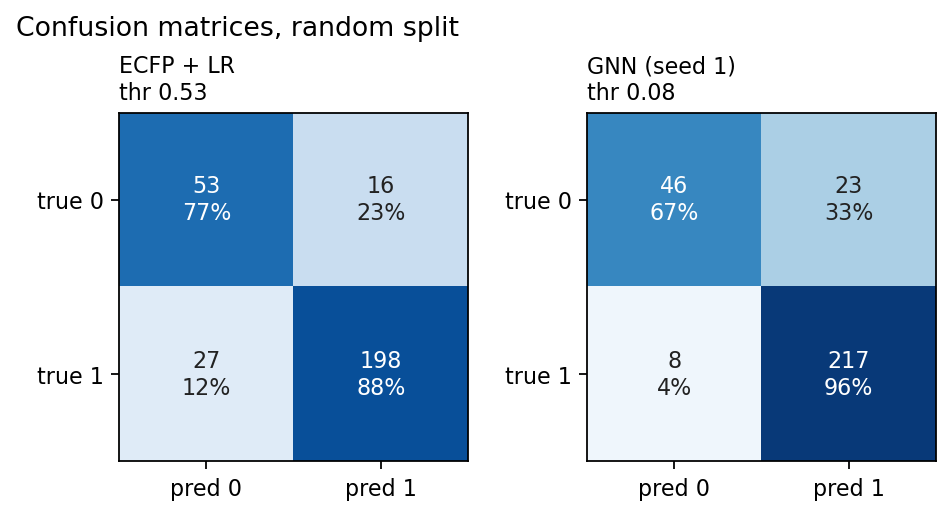
Fig. 8 Random split. The baseline recovers 53 of 69 negatives.
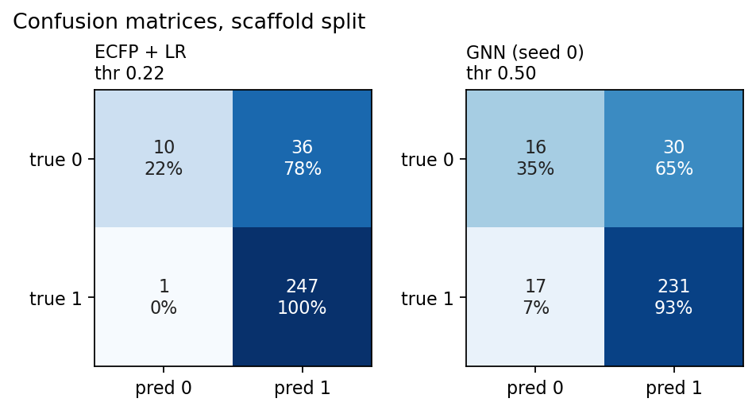
Fig. 9 Scaffold split. The baseline finds 10 of 46 negatives and misses 36; the GNN is no better in kind. Both have become majority-class predictors.
Baseline versus GNN — read the gap against the seed spread. The GNN leads on ROC-AUC on both splits, by 0.016 on random and 0.031 on scaffold. The scaffold-split seed standard deviation is 0.031. The margin and the noise are the same size, so the honest statement is no demonstrated advantage on the split of interest — not "the GNN wins", and not "fingerprints win". A GNN is not entitled to beat a fingerprint: 1376 training molecules is very little data for 250,244 parameters, and the baseline's 2048-bit substructure representation is well matched to a dataset where penetration correlates with recognisable functional groups.
Random versus scaffold — the split dominates. Scaffold evaluation costs the GNN 0.138 ROC-AUC and the baseline 0.153, against a 0.016–0.031 model effect and 0.021 seed noise. A single random-split number on BBBP is therefore mostly a report about the split, and is not comparable to a scaffold-split number from another paper.
The trap in the accuracy column. Going to the harder split, the baseline's accuracy rises 0.854 → 0.874 and its F1 rises 0.902 → 0.930, while its specificity falls 0.768 → 0.217 and balanced accuracy falls 0.824 → 0.607. Two things produce this: the test base rate is higher (0.844 vs 0.765, Table 4), and both models respond to unfamiliar chemistry by predicting the majority class — sensitivity 0.996, specificity 0.217. That is the base rate wearing a model's clothes. The two most commonly reported metrics in this literature are the two that conceal the failure; balanced accuracy and specificity are the columns that expose it, which is why they are reported here throughout. And none of it is biology: a fingerprint bit co-occurring with a label is a correlation in a curated table, and nothing in these numbers identifies a mechanism of penetration or supports a claim about any compound.
Every molecule in the scaffold test set is matched to its most similar training molecule by Tanimoto similarity over Morgan fingerprints (|A∩B|/|A∪B| on the bit sets). This separates two failure modes that call for opposite responses: an error far from anything in training is an applicability-domain problem, where the right response is to decline to predict rather than to train harder; an error with a close, correctly-labelled neighbour is a modelling failure, an activity cliff, or a label error.
| kind | p | true | NN sim | NN label | reading |
|---|---|---|---|---|---|
| FP | 0.970 | 0 | 0.273 | 0 (agrees) | far from everything; confidence unearned |
| FP | 0.968 | 0 | 0.609 | 1 (disagrees) | close analogue, opposite label — an activity cliff |
| FN | 0.035 | 1 | 0.512 | 1 (agrees) | neighbour was right; a modelling failure |
| FN | 0.044 | 1 | 0.333 | 0 (disagrees) | distant, misleading neighbour |
Does similarity explain the errors? In three of the four cases it helps. The first FP is pure extrapolation: the nearest training molecule shares only 27% of its bits, so the 0.970 probability reflects nothing the model has evidence for. The second FP is the opposite and more interesting — a 0.609-similar training molecule carrying the opposite label, so the model generalised exactly as designed and was defeated by an activity cliff; no amount of training fixes that case. The first FN has a 0.512-similar, correctly-labelled neighbour, which is a genuine modelling failure with no excuse available. So similarity is diagnostic of which kind of error occurred, and in the distant cases it directly indicts the confidence.
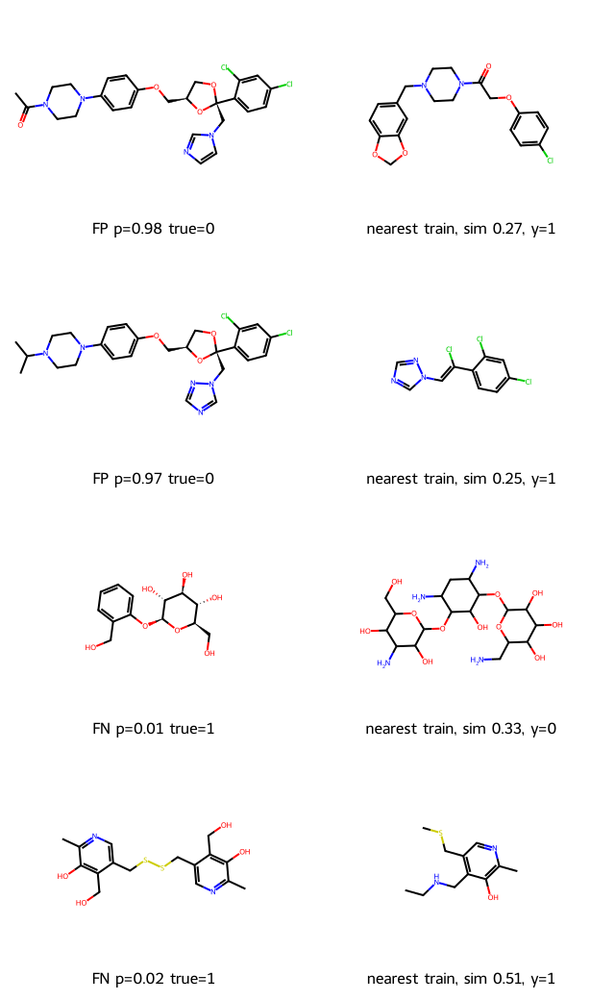
Fig. 10 Each error beside its nearest training molecule. Left column the test molecule, right column its neighbour.
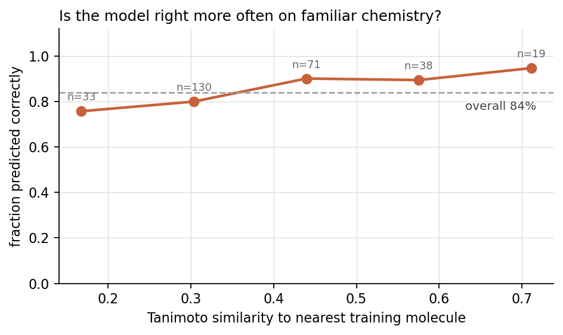
Fig. 11 Fraction predicted correctly against Tanimoto similarity to the nearest training molecule, scaffold test set. The dashed line is the 84% overall accuracy that a single headline number would report.
| quantity | value |
|---|---|
| overall accuracy | 0.840 |
| accuracy, least-similar third (sim < 0.308) | 0.724 |
| accuracy, most-similar third (sim > 0.426) | 0.908 |
| mean similarity, correct predictions | 0.398 |
| mean similarity, wrong predictions | 0.340 |
| Mann–Whitney U (one-sided) | 7498.5 |
| p-value | 0.00076 |
The headline accuracy averages over molecules of very different difficulty. The gap between the least- and most-similar thirds (0.724 vs 0.908) is significant at p = 0.0008 by a one-sided Mann–Whitney test on the similarity of correct versus incorrect predictions. The model is reliable on familiar chemistry and close to coin-flipping on unfamiliar chemistry — and nothing in its output says which case you are in. A single probability cannot distinguish "confident because this is a well-covered series" from "confident because an extrapolation landed somewhere confident"; Table 7's first FP is that failure at p = 0.970.
Tools and AI use. PyTorch and PyTorch Geometric, RDKit (cheminformatics, pinned 2025.03.6), scikit-learn, NumPy, SciPy and Matplotlib. Generative-AI assistance (Anthropic Claude) was used to help develop and debug the pipeline code and draft this report; all results were produced by the author's own executed notebook and are the author's responsibility.
One command reproduces every number and figure in this report:
python scripts/run_all.py (303 s, CPU only), or equivalently the notebook
BBBP_molecular_property_prediction.ipynb top to bottom. Split seed 0; GNN seeds
0, 1, 2. python tests/test_pipeline.py runs 35 checks in ~20 s without
downloading the dataset.
Environment. torch 2.14.0, torch_geometric, rdkit 2025.03.6 (pinned),
scikit-learn, numpy, scipy, matplotlib. The RDKit pin is load-bearing, not cosmetic: see
§ C. data/ is gitignored; the MoleculeNet file is downloaded by the loader.
Repository layout. bbbp/ — config (every result-affecting number in one
object), data (load, canonicalize, de-duplicate, remove conflicts), splits (both strategies
plus verification), features (fingerprints, Tanimoto), models (GINENet), train (loop, early
stopping, frozen threshold), baseline, metrics, errors, plots. scripts/run_all.py
— the eight-stage pipeline. tests/test_pipeline.py — 35 fast checks.
results/ — results.json, comparison.csv, error_rows_scaffold.csv, 11 figures.
What the test suite covers, chosen because the worst failures in this pipeline are silent: canonicalization collapses the two aspirin spellings; Murcko scaffolds on known molecules; a degenerate scaffold decomposition is rejected; fingerprint self-similarity = 1.0; the all-positive trap (0.90 accuracy, 0.50 balanced accuracy) is detected; splits on 12 synthetic frameworks × 10 analogues verify disjointness and class balance; the GNN forward pass is permutation-invariant; fewer than two message-passing layers is rejected.
| split | seed | best/stop epoch | thr | ROC-AUC | accuracy | bal. acc | sens | spec | F1 |
|---|---|---|---|---|---|---|---|---|---|
| random | 0 | 47 / 77 | 0.221 | 0.924 | 0.884 | 0.804 | 0.956 | 0.652 | 0.927 |
| random | 1 | 30 / 60 | 0.081 | 0.942 | 0.895 | 0.816 | 0.964 | 0.667 | 0.933 |
| random | 2 | 77 / 107 | 0.084 | 0.922 | 0.850 | 0.757 | 0.933 | 0.580 | 0.905 |
| scaffold | 0 | 16 / 46 | 0.496 | 0.812 | 0.840 | 0.640 | 0.932 | 0.348 | 0.908 |
| scaffold | 1 | 33 / 63 | 0.214 | 0.756 | 0.820 | 0.592 | 0.923 | 0.261 | 0.896 |
| scaffold | 2 | 43 / 73 | 0.085 | 0.806 | 0.840 | 0.560 | 0.968 | 0.152 | 0.911 |
On the specificity spread. The scaffold-split specificity is 0.254 ± 0.098 — a relative spread of 39%, against 0.031 on ROC-AUC. Threshold-dependent metrics on 46 negative test molecules are extremely unstable, and any paper reporting a single-seed specificity on a scaffold split of this dataset is reporting noise. This is the quantitative reason § F leads with ROC-AUC and treats the thresholded metrics as diagnostic rather than as the result.
The ten conflicting-label groups removed in § A, taken from the source CSV's own
name field: loperamide (as BRL53080 / loperamide),
aspirin (acetylsalicylate / aspirin), atropine (atropine /
atropine(hyoscyamine)), trimetrexate (Trimetrexate / trimetrexate),
indomethacin (indomethacin / indomethacin(indometacin)),
levodopa, mequitazine, methylprednisolone (Methylprednisolone /
methylprednisolone), miconazole and loratadine. Each appears twice, once
with p_np = 0 and once with p_np = 1 — for ten well-characterised drugs the benchmark asserts
both answers. All ten pairs are written as different SMILES strings, so none is
detectable without canonicalizing first. The name fields are themselves diagnostic: case
variants, internal codes and synonym parentheticals are the signature of a compilation merged
from sources that were never reconciled, which is exactly the provenance that produces
contradictory labels.